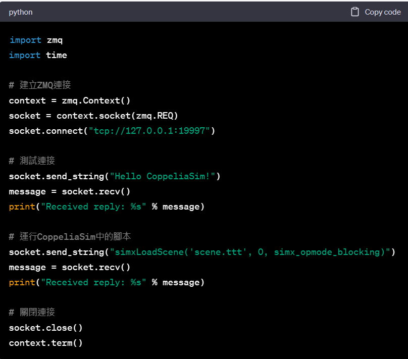

bubblerob <<
Previous Next >> w11
w10
有關 CoppeliaSim zmqRemoteAPI 問題
Q.
1.What is zmqRemoteAPI, and how does it relate to CoppeliaSim?
2.How do you establish a connection between a Python script and CoppeliaSim using zmqRemoteAPI?
3.What are some common use cases for zmqRemoteAPI in CoppeliaSim?
4.What are the advantages and disadvantages of using zmqRemoteAPI compared to other methods of communication between Python and CoppeliaSim?
5.Can you give an example of a project or task that you could complete using zmqRemoteAPI in CoppeliaSim?
A.
1.
zmqRemoteAPI 是一種輕量級、高效的通訊協議，用於將外部應用程式（例如 Python）與 CoppeliaSim 機器人模擬軟件連接起來。它允許使用者使用一組預定義的函數，從外部應用程式控制模擬。
CoppeliaSim 是一種強大的 3D 模擬軟件，用於機器人和自動化開發。它提供了各種建模、模擬和控制機器人和其他自動化系統的工具和功能。使用 zmqRemoteAPI 和 CoppeliaSim 可以使使用者更輕鬆地控制和監視模擬。
2.
要使用zmqRemoteAPI在Python腳本與CoppeliaSim之間建立連接，需要完成以下步驟：
-
下載並安裝ZeroMQ 請先至ZeroMQ官方網站下載ZeroMQ，並進行安裝。
-
啟用CoppeliaSim的遠程API 在CoppeliaSim中，需要啟用遠程API，方法是進入菜單欄中的"Tools"->"Remote API"，然後選擇"Enable remote API"，接著選擇"Legacy remote API"。啟用後，CoppeliaSim會自動打開一個端口，等待Python腳本連接。
-
在Python腳本中使用zmqRemoteAPI 接下來，在Python腳本中使用zmqRemoteAPI與CoppeliaSim建立連接，示例程式碼如下：

這段程式碼首先建立了一個ZMQ連接，並使用send_string()和recv()方法向 CoppeliaSim發送和接收消息。在此示例中，我們向CoppeliaSim發送了兩條消息：第 一條是測試連接的消息，第二條是在CoppeliaSim中運行腳本的消息。當然，您可以 根據自己的需求發送不同的消息。
- 在CoppeliaSim中編寫適當的腳本 在Python腳本中發送"simxLoadScene()"等消息時，需要在CoppeliaSim中編寫相應的腳本來執行該操作。例如，如果要加載一個場景，需要在CoppeliaSim中編寫一個腳本來加載該場景。可以使用CoppeliaSim提供的Lua腳本語言來編寫這些腳本。在CoppeliaSim的安裝目錄下的"programming/remoteApiBindings/lib/libLua"文件夾中，可以找到相應的遠程API函數和範例腳本。
3.
在 CoppeliaSim 中，zmqRemoteAPI 是一個非常有用的模塊，它可以用於以下一些常見的應用場景：
-
控制機器人：zmqRemoteAPI 可以用於控制機器人在 CoppeliaSim 模擬器中的運動和行為，包括設置關節位置、速度和力矩等參數，控制機器人的運動軌跡和姿態，以及獲取機器人的感測器數據和影像信息等。
-
編寫自動化測試：zmqRemoteAPI 可以幫助使用者編寫自動化測試脚本，測試機器人和其他物體的運動和行為，並驗證機器人的控制算法和程序的正確性。
-
設計自主導航系統：zmqRemoteAPI 可以用於設計自主導航系統，通過控制機器人的運動和行為來實現自主導航，並在 CoppeliaSim 中進行仿真測試。
-
進行物體檢測和跟蹤：zmqRemoteAPI 可以用於設計物體檢測和跟蹤系統，通過獲取 CoppeliaSim 中的影像數據和感測器數據來實現物體檢測和跟蹤功能。
總之，zmqRemoteAPI 可以幫助使用者更加靈活地控制 CoppeliaSim 中的機器人和物體，從而實現更多的應用場景，如機器人控制、自主導航、自動化測試和物體檢測等。
4.
zmqRemoteAPI 是一種輕量級和高效的通信協議，用於連接Python和CoppeliaSim。以下是使用zmqRemoteAPI與其他方法之間的優缺點比較：
優點：
- 快速和高效：zmqRemoteAPI使用ZeroMQ消息庫，以其快速和高效的消息傳遞能力而聞名。
- 易於使用：zmqRemoteAPI是一個簡單易用的API，提供了一系列函數，可從Python腳本中控制模擬。
- 跨語言支持：zmqRemoteAPI是一種跨語言協議，因此您可以使用任何支持ZeroMQ的編程語言。
- 支持多個連接：zmqRemoteAPI支持多個連接，因此您可以將多個客戶端連接到單個CoppeliaSim實例。
缺點：
- 功能受限：儘管zmqRemoteAPI提供了一系列函數來控制CoppeliaSim，但與其他通信方法（如ROS或Python的Coppeliasim庫）相比，其功能受限。
- 較不易使用：zmqRemoteAPI需要一些ZeroMQ和socket編程的知識，這對於新手用戶來說可能不太容易使用。
- 可能出現錯誤：如果通信未正確配置，zmqRemoteAPI容易出現錯誤，這可能會導致消息丟失或模擬停滯等問題。
- 彈性較小：與其他通信方法相比，zmqRemoteAPI的自定義彈性較小，因為它依賴於預定義的一組函數。
總之，zmqRemoteAPI是用於連接Python和CoppeliaSim的快速和高效的通信協議，但與其他通信方法相比，其功能受限，需要一些ZeroMQ和socket編程的知識。它適用於簡單的模擬或效率至上的應用，但其他通信方法，如ROS或Python的Coppeliasim庫，可能更適合更複雜的應用程序。
5.
bubblerob <<
Previous Next >> w11